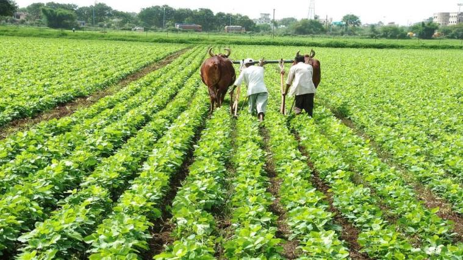

PM Kisan Yojana: बस चंद दिनों का इंतजार, किसानों के खाते में आ जाएंगे पैसे, लेकिन उससे पहले पूरा कर लें ये काम:
PM Kisan Yojana Next Installment: केंद्र सरकार जल्द ही पीएम किसान सम्मान निधि की 2,000 रुपये की 11वीं किस्त किसानों के खाते में ट्रांसफर करने जा रही है. 10वीं किस्त का पैसा 1 जनवरी 2022 को किसानों के खाते में ट्रांसफर किया गया था. ऐसे में अब किसान 11वीं किस्त के इंतजार में हैं. माना जा रहा है कि अक्टूबर महीने के किसी भी तारीख में किसानों के बैंक अकाउंट में सरकार द्वारा ये राशि भेजी जा सकती है.
PM Kisan Yojana Latest Update: भारत में किसानों की माली हालत बेहतर करने के लिए केंद्र और राज्य सरकारें तमाम तरह की योजनाओं पर काम करती है. पीएम किसान सम्मान निधि भी कुछ इसी तरह की योजना है. इस योजना के तहत केंद्र सरकार द्वारा किसानों के खाते में चार महीने के अंतराल में दो-दो हजार रुपये भेजा जाता है. यानी किसानों को सालाना 6 हजार रुपये दिए जाते हैं